Example OverviewMIDP Reference Implementation
|
This release includes a number of example MIDlet suites. They are in the midpInstallDir\example directory, where midpInstallDir is the directory that holds your MIDP installation. Some of the examples contain several MIDlets, while others contain a single MIDlet.
You can use the example MIDlet suites for demonstration purposes or for simple functional regression testing. They are not appropriate for instructional purposes or as coverage tests for the MIDP specification.
The following table describes the MIDlet suites:
| MIDlet Suite Name (JAD file name) |
MIDlet Name | Screen Shot | Description |
|---|---|---|---|
|
Ticket Auction |
TicketLand | 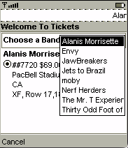 | Look up the ticket auctions for a band, set an alert, or making a bid
in this mockup of a ticket auction service. This example has been updated for MIDP 2.0 and shows new high-level user-interface components. |
| AudioSamples ( audiodemo.jad) |
|
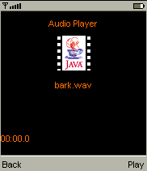 |
Listen to sounds using Mobile Media API's audio building block. This example is new for MIDP 2.0. |
( demos.jad) |
Colors | 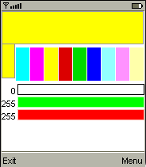 | Select red green and blue values to create a color. Set SCREEN_DEPTH to 8 before starting the color chooser demo. This MIDlet is the same as the one in the MIDP 1.0.3 Reference Implementation. |
| HTTP | 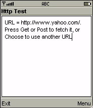 |
View the contents of a site using the HTTP protocol. Use the arrow buttons to choose a site to view, then press the select button. Press the right soft button on the phone to see headers, requests and errors. This MIDlet is the same as the one in the MIDP 1.0.3 Reference Implementation. |
|
| Properties | 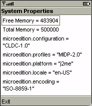 |
See information about the device, such as the device's free and total memory. This MIDlet is the same as the one in the MIDP 1.0.3 Reference Implementation. |
|
| Chooser | 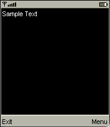 |
Choose the background color, text color, and font properties of the sample text, and see the results of your choices on the screen. This MIDlet is new for MIDP 2.0. |
|
| FontTestlet ( fonts.jad) |
FontTestlet | 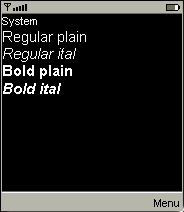 |
Display the fonts available on the device. This MIDlet is the same as the one in the MIDP 1.0.3 Reference Implementation. |
| SunSamples - Games ( games.jad) |
WormGame | 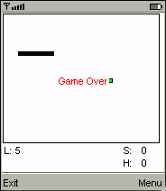 |
Get your worm to eat as many blocks as possible without hitting the outside walls or running into its own tail. Use the arrow keys to maneuver. MIDlet is the same as the one in the MIDP 1.0.3 Reference Implementation. |
| TilePuzzle | 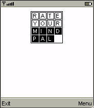 |
Reshuffle the letters to make the words shown on the initial screen. Choose Menu to see options including starting the game or changing game properties. This MIDlet is the same as the one in the MIDP 1.0.3 Reference Implementation. |
|
| Hanoi ( hanoi.jad) |
Hanoi | 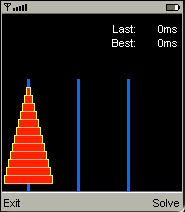 |
Watch the MIDlet solve the classic Towers of Hanoi puzzle. Choose Solve to start. This MIDlet is new for MIDP 2.0. |
| ManyBalls ( manyballs.jad) |
ManyBalls | 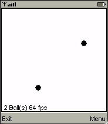 |
Watch balls move on the screen. Press left/right to change the number of balls and up/down to change the speed. This example shows what can be accomplished in a multithreaded execution
environment. It is the same as the ManyBalls MIDlet in the MIDP 1.0.3
Reference Implementation. |
| Newshound ( newshound.jad) |
NewsHound |
See the latest news reports. This example uses the MIDP 2.0 push functionality to get the latest updates. This MIDlet is new for MIDP 2.0 Note: This MIDlet suite cannot be installed at the same time as HttpView. They both use the same push resources (the same port), and the device cannot have two MIDlet suites that use the same port for push on the device at the same time. To run Newshound:
|
|
| PhotoAlbum ( photoalbum.jad) |
PhotoAlbum | 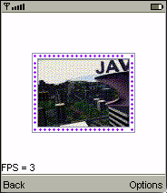 |
Display a variety of images and animations. This MIDlet is the same as the one in the MIDP 1.0.3 Reference Implementation |
| HttpView ( pushdemo.jad) |
HttpView | 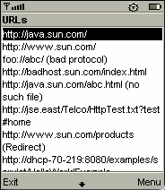 |
Receive data from a URL you choose from the list, or from pushed data. This MIDlet is new for MIDP 2.0. Note: This MIDlet suite cannot be installed at the same time as Newshound. They both use the same push resources (the same port), and the device cannot have two MIDlet suites that use the same port for push on the device at the same time. To have this MIDlet receive pushed data, follow the steps given for running Newshound. |
| HttpTest | 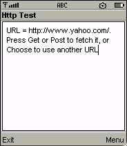 |
Receive data from a URL you specify. This MIDlet is the same as the HTTP MIDlet in the SunSamples - Demos MIDlet suite. |
|
| PushPuzzle ( pushpuzzle.jad) |
PushPuzzle | 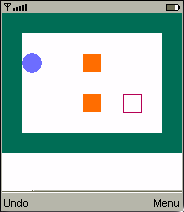 |
Move the solid boxes into the hollow "storage" boxes. To change the game
options, choose Menu. As it did in MIDP 1.0, this MIDlet still uses the record store to remember the user's current level and high score, game actions for moving the object that pushes the boxes, and touch screen if it is available.
|
| Stock ( stock.jad) |
Stock | 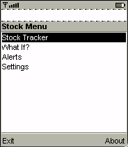 | Get stock quotes from a publicly available website,
and set alerts. This example shows how to send and receive the appropriate HTTP headers. It also shows the use of timers, persistent storage and user interface dialogs. It is the same as the Stock MIDlet in the MIDP 1.0.3 Reference Implementation. Note: If you have to go through a firewall to reach the Internet,
uncomment the line |
|
|
|||
Copyright © 2002 Sun Microsystems, Inc. All rights reserved.